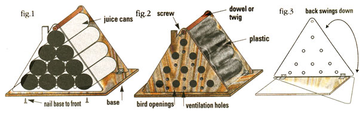

COUNTRY LORE
MOTHER's February/March issue had a lovely article on building a purple martin house. Much time, labor, and money were involved for a very professional-looking finished product.
Now here's a very acceptable, much cheaper, and adorable substitute. It requires three pieces of scrap exterior plywood at least 3/8" thick but not more than 3/4" inch thick, a nice straight strong twig or dowel about a 1/2" inch in diameter, a tall white plastic kitchen garbage bag, a couple of small hinges, bits of leftover exterior paint, and ten tall juice cans with both ends cut off.
Be sure the can edges are smooth and stack them on their sides in a pyramid (see figure 1). Tape them together. Cut a front and back for your house to fit over the ends of the cans, plus a bit more, from your exterior plywood. These should be cut as triangles with gently rounded corners, or, if you prefer, cut the front in the shape of a house with a chimney. Cut a base of plywood an inch or two bigger than the bottom of your pyramid.
Take your front piece of plywood and cut entry holes for each can. Drill 1/4" holes between each can-front and back-for ventilation. Nail or screw the front securely onto the base, back an inch or two from the edge (see figure 2). Attach the back to the base with the hinges so you can drop it down to clean it out (see figure 3). Be sure to cut your front and back an inch or two taller than your pyramid of cans so you can run your twig or dowel front to back to serve as both a landing rod for the birds and to hold the house together at the top. To do this, drill a hole big enough to poke the twig through at the top of the back. Glue or screw the twig securely to the top of the front. Drill a hole through the twig near the back end, so you can peg it securely. (You can hang the peg on the back of your birdhouse so it doesn't get lost.)
Wrap your cans securely as one unit with the plastic garbage bag and place it on the base, wedged between the front and back. Mount where and how you please. Paint to suit your fancy. Cheap, easy, fun-and the birds seem to like it!
Now, can someone help me? I want to know how to make the old-fashioned, homemade baby chicken waterers with the glass jar. Sure would appreciate it.
-Maida Rodgers Farmington, AR
|
 |
|
|